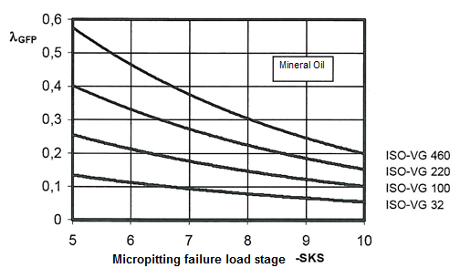

|
|
|


微点蚀的安全性
计算方法
计算按照 ISO/TS 6336-22，方法 A 进行。所有所需数据均取自接触分析。
润滑间隙厚度 h 和特定润滑剂膜厚度 λGFP
ISO/TS 6336-22 提案详细定义了用于确定啮合过程中有效润滑间隙厚度 h 和有效比润滑间隙厚度 λGF 变化历程的计算方法。润滑间隙会随局部滑动速度、载荷和热工况的不同而显著变化。比润滑间隙厚度最小的位置是评估微点蚀风险的决定性因素。
允许的特定润滑剂膜厚度 λGFP
评估微点蚀（霜蚀）的风险时，关键是要了解所需的最小特定润滑间隙厚度 λGFmin 应取多大。计算规则为：
必须满足 λGFmin >= λGFP，以防止微点蚀（霜蚀）；或确保霜蚀安全系数 Sl = λGFminP/ λGFP。
如果已知润滑剂的微点蚀（霜蚀）载荷级，则根据 ISO/TS 6336-22，从试验台数据计算允许的特定润滑剂膜厚度。
否则，λGFP 的参考值可从适当的技术文献中得出。
在[59]中，用户将看到一张简图，该简图根据油的粘度和微点蚀（霜蚀）损伤等级 SKS，显示了矿物油允许的特定润滑间隙厚度 λGFP。

图 23.6：润滑膜最小必要特定厚度 λGFP
微点蚀损伤等级 SKS，根据 FVA 信息表[60]确定，如今也出现在各种润滑剂制造商生产的数据表中。图中数据适用于矿物油。具有相同粘度和霜蚀损伤等级的合成油，其允许的特定润滑间隙厚度 λGFP 更小[59]。不幸的是，由于尚未对其影响进行系统研究，因此没有合适的数值可供参考。
此外，请注意，这些预定义的 λGFP 值仅适用于渗碳材料。如 ISO/TS 6336-22 所规定，对于其他材料，允许的特定润滑间隙厚度 λGFP 可以乘以系数 Ww。
| Ww | |
| 渗碳钢，高奥氏体含量 <= 25% | 1.00 |
| 渗碳钢，高奥氏体含量 >= 25% | 0.95 |
| 气体渗氮（HV > 850） | 1.50 |
| 感应或火焰硬化 | 0.65 |
| 整体淬火钢 | 0.50 |
表 23.2：材料系数
值得注意的是，至少根据上表所示，当使用相同的润滑间隙时，含有氮化物（渗氮）的材料比渗碳硬化材料更容易发生微点蚀。相比之下，未进行表面硬化的整体淬火材料则要更加耐受。
用户应意识到此处显示的数据必须谨慎使用，因为关于微点蚀过程的信息仍不完整，甚至技术出版物有时也会包含相互矛盾的数据。
微点蚀安全性
如果按照 FVA 中定义的微点蚀载荷级 C-GF/8.3/90 [60] 指定润滑剂的载荷，则可以计算出所需的最小润滑膜厚度 λGFP。然后可以定义微点蚀的安全性 Sλ = λGFmin/ λGFP。
图形可以在 2D 或 3D 视图中显示。可在 2D 图形属性中选择要显示的剖面图。
Safety against micropitting
Calculation method
The calculation is performed according to ISO/TS 6336-22, Method A. All the required data is taken from the contact analysis.
Lubrication gap thickness h and specific lubricant film thickness λGFP
The ISO/TS 6336-22 proposal contains a detailed definition of the calculation used to determine the progression of the effective lubrication gap thickness h and the effective specific lubrication gap thickness λGF across the meshing. The lubrication gap can vary significantly depending on local sliding velocity, load and thermal conditions. The location with the smallest specific lubrication gap thickness is the decisive factor in evaluating the risk of micropitting.
Permitted specific lubricant film thickness λGFP
To evaluate the risk of micropitting (frosting), it is vital that you know how large the required smallest specific lubrication gap thickness λGFmin is to be. The calculation rule states that:
λGFmin >= λGFP must be set to prevent micropitting (frosting), or to ensure safety against frosting Sl = λGFminP/ λGFP.
If the lubricant's micropitting (frosting) load stage is known, the permitted specific lubricant film thickness is calculated from test rig data, according to ISO/TS 6336-22.
Otherwise, reference values for λGFP can be derived from the appropriate technical literature.
In [59] you will see a diagram that shows the permitted specific lubrication gap thickness λGFP for mineral oils, depending on oil viscosity and the micropitting (frosting) damage level SKS.
Figure 23.6: Minimum necessary specific thickness of lubricant film λGFP
The micropitting damage level SKS, determined in accordance with the FVA information sheet [60], is nowadays also stated in data sheets produced by various lubricant manufacturers. The data in the diagram applies to mineral oils. Synthetic oils with the same viscosity and frosting damage level show a lower permitted specific lubrication gap thickness λGFP [59]. Unfortunately, as no systematic research has been carried out on their effects, no properly qualified values are available.
Furthermore, note that the predefined λGFP values only apply to case-hardened materials. As specified in ISO/TS 6336-22, for other materials, the permitted specific lubrication gap thickness λGFP can be multiplied by the coefficient Ww.
| Ww | |
| Case hardening steel, with high austenite content <= 25% | 1.00 |
| Case hardening steel, with high austenite content >= 25% | 0.95 |
| Gas-nitrided (HV > 850) | 1.50 |
| Induction or flame-hardened | 0.65 |
| Through hardening steel | 0.50 |
Table 23.2: Material coefficient
It is interesting to note that, at least according to the table shown above, materials with a nitrite content are more prone to micropitting than case-hardened materials when the same lubrication gap is used. In contrast, through hardened materials that are not surface hardened are much more resistant.
You should be aware that the data shown here must be used with caution, because information about the micropitting process is still incomplete, and even technical publications will sometimes contain contradictory data.
Safety against micropitting
If the load stage against micropitting as defined in FVA C-GF/8.3/90 [60] is specified for the lubricant, the minimum required lubricant film thickness λGFP is calculated. This then makes it possible to define the safety against micropitting Sλ = λGFmin/ λGFP.
The graphic can be displayed in 2D or 3D view. You can select which section is to be displayed, in the 2D graphic's properties.